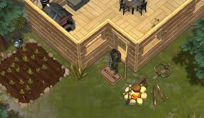

Fortify Your Position
With tools in hand and a few levels under your belt, the next move is to make roughing it a little less rough. The Casual Backpack, Garden Bed, Raincatcher, and a small house (big enough for a Small Box or two and some space for later additions) are next on the list.
The Backpack makes harvesting and transportation of items much easier, doubling your total inventory space from your basic Pockets. The Garden Bed and Raincatcher help keep you stocked on provisions and keep hunger and dehydration at bay. (Just make sure to keep any empty containers from used food or water.)
Lastly, make sure to secure your base in a full wrap-around with a door. The magical sanctity of "home base" is apparently only beatable with C4, keeping most of your belongings safe in case of invasion or light zombie attacks.